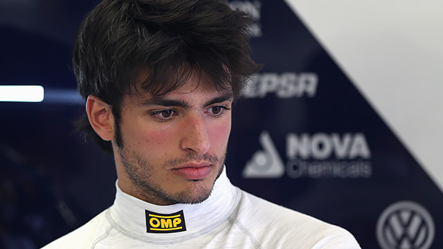

Smooth Operator
Carlos Sainz, the Spanish F1 driver, is in demand by top F1 teams ahead of the 2025 season. Sainz has been shortlisted for Mercedes' 2025 vacancy, and other F1 team bosses are also taking a close look at him.0 Sainz is the son and namesake of two-time World Rally Champion Carlos Sainz Sr., and has a racing mentality inherited from his father.3 Sainz opted against a career in rallying in favour of pursuing success in single-seaters, gaining recognition beyond his revered name with a series of accolades in karting and junior formula.23 Sainz scored his debut F1 victory in 2022 but was unable to match his current teammate Charles Leclerc over the course of the season. He will enter into his fourth year with the Scuderia in 2024.